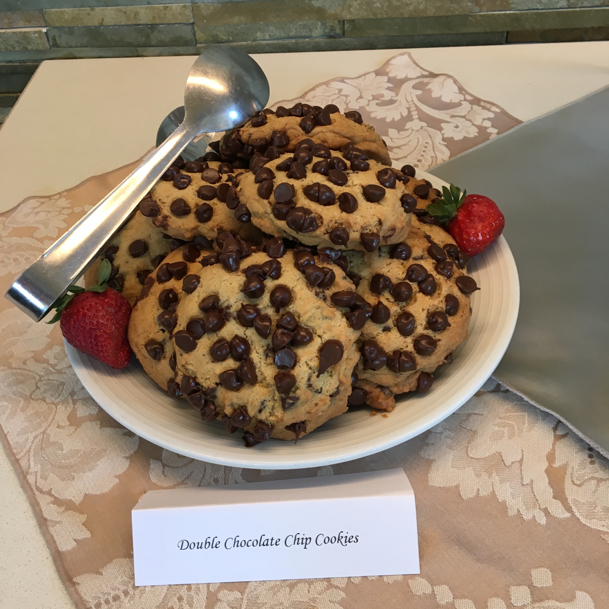

Mrs. Kudija's Chocolate Chip Cookies

Notes
Source: BH&G 1989
Yield: about 120 small cookies or 40 giant cookies
Temp: 375 degrees
Ingredients
- 1 cup shortening
- 1 cup margarine or butter
- 2-1/2 cups all-purpose flour
- 2-1/2 cups whole wheat flour
- 2 cups packed brown sugar
- 1 cup sugar
- 1 tsp. baking soda
- 4 eggs
- 2 tsp. vanilla
- 2 12-oz. packages semisweet chocolate chips (4 cups)
- 2 cups chopped walnuts, pecans, or hazelnuts (optional)
Instructions
In a mixing bowl, beat the shortening and margarine or butter with an electric mixer on medium to high speed for 30 seconds. Add about half of the flours, the brown sugar, sugar, eggs, vanilla, and baking soda. Beat mixture until thoroughly combined. Beat in the remaining flour by hand. Stir in chocolate chips and, if desired, nuts.
Drop dough by rounded teaspoons two inches apart onto an ungreased cookie sheet. Bake in a 375 degree oven for 8 to 10 minutes or until edges are lightly browned. Remove from baking sheet and cool on foil.
For Giant Chocolate Cookies: Prepare as above, except drop dough from a ¼ cup measure or scoop about four inches apart onto cookie sheet. Bake for 11 to 13 minutes or until edges are lightly browned.